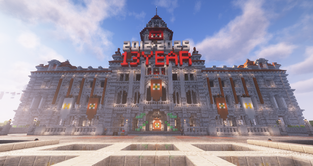

Loading header...
新手教学
BiliCraft 18th是一个基于MineCraft Java版1.20.4的插件生存服务器。

主城出生点
资源获取概述
资源获取是生存中重要的一环，如果你需要生存资源、建筑材料或者游戏货币，这篇文章将会为你获取资源提供帮助。
BiliCraft在资源获取中和多数生存服务器有所不同，请仔细阅读该教学。
传统资源
BiliCraft拥有两个主要服务器，分别是Raphael（简称RA）服务器和Factory服务器（简称FC）。
其中，Raphael是主服务器，玩家在这里进行生存、建筑等主要游戏活动。Factory是工厂服务器，生电机器应该安装到此服务器，而不是Rapheal服务器，这是为了保证主服务器的流畅运行，减少主服务器的卡顿，提高玩家的游戏体验。
Raphael
与多数服务器不同，BiliCraft并不建议玩家在主世界获取资源，这是为了保护自然景观，提升玩家体验。
服务器通过paper服务端运行，并不是所有机器都能够完美适配。
目录